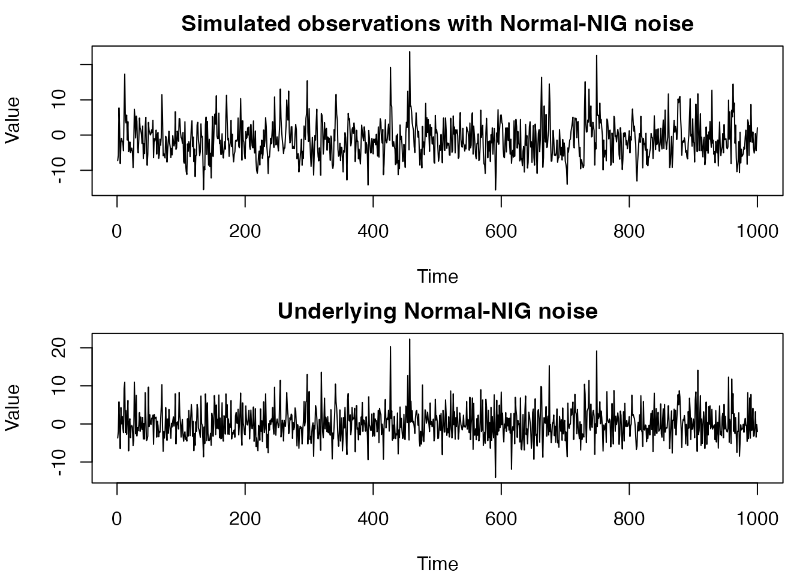
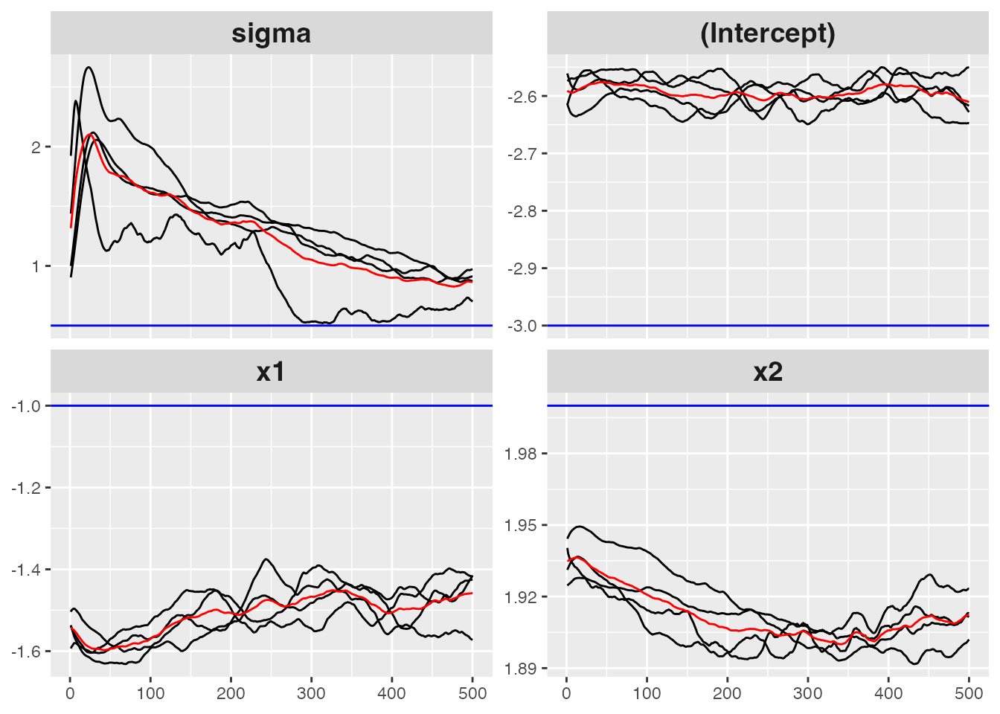
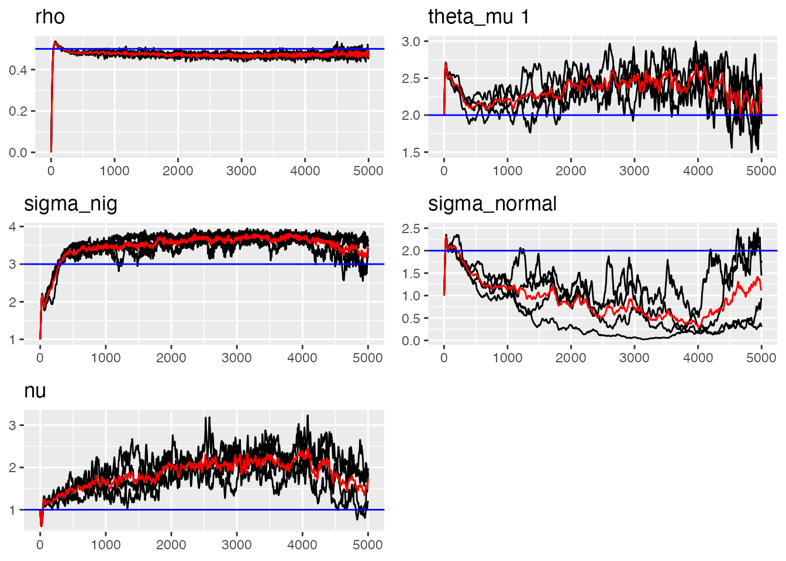

Combined Gaussian and NIG Noise Models
ngme2 Team
2025-11-29
Source:vignettes/normal-nig-noise.Rmd
normal-nig-noise.Rmd
library(ngme2)
#> This is ngme2 of version 0.8.0
#> - See our homepage: https://davidbolin.github.io/ngme2 for more details.
#>
#> Attaching package: 'ngme2'
#> The following object is masked from 'package:stats':
#>
#> ar
set.seed(123) # For reproducibilityIntroduction
This vignette introduces a special feature of the ngme2
package: the ability to model latent processes driven by a combination
of both Gaussian and Normal Inverse Gaussian (NIG) noise. This mixed
noise model provides greater flexibility in capturing complex
distributional patterns in your data that may exhibit both heavy tails
and Gaussian components.
Background: Understanding Mixed Noise Models
In many real-world applications, the observed data may result from
processes affected by multiple sources of randomness with different
distributional characteristics. The normal_nig noise model
in ngme2 provides a powerful way to account for this by
combining:
- Normal (Gaussian) noise: Symmetric, light-tailed noise following a normal distribution.
- Normal Inverse Gaussian (NIG) noise: A flexible, heavy-tailed distribution that can capture skewness and excess kurtosis.
The NIG distribution is a flexible four-parameter continuous probability distribution that can handle asymmetry and heavy tails. By combining it with normal noise, we can model complex stochastic behaviors more accurately.
Mathematical Formulation
The combined Normal-NIG noise model can be represented as:
where:
- follows an NIG distribution with parameters , , and
- follows a normal distribution with standard deviation
The NIG component itself is often constructed as:
where: - (for identifiability) - follows an inverse Gaussian distribution with parameters related to - is standard normal
Simulating Data with Mixed Normal-NIG Noise
Let’s simulate a dataset that exhibits both Gaussian and NIG noise components. We’ll create an AR(1) process driven by this mixed noise:
# Set parameters
n_obs <- 1000
sigma_eps <- 0.5 # Measurement noise (observation error)
alpha <- 0.5 # AR(1) coefficient
mu <- 2 # NIG parameter mu
delta <- -mu # NIG parameter delta (typically set to -mu)
sigma_nig <- 3 # NIG noise scale
nu <- 1 # NIG shape parameter
sigma_normal <- 2 # Normal noise standard deviation
# First we generate V. V_i follows inverse Gaussian distribution
trueV <- ngme2::rig(n_obs, nu, nu, seed = 10)
# Generate the NIG noise component
nig_noise <- delta + mu * trueV + sigma_nig * sqrt(trueV) * rnorm(n_obs)
# Add normal noise component
mixed_noise <- nig_noise + rnorm(n_obs, mean = 0, sd = sigma_normal)
# Generate the AR(1) process
trueW <- Reduce(function(x, y) {
y + alpha * x
}, mixed_noise, accumulate = TRUE)
# Add measurement noise to get observations
Y <- trueW + rnorm(n_obs, mean = 0, sd = sigma_eps)
# Add some fixed effects
x1 <- runif(n_obs)
x2 <- rexp(n_obs)
beta <- c(-3, -1, 2)
X <- model.matrix(~ x1 + x2) # design matrix
Y <- as.numeric(Y + X %*% beta)
# Plot the simulated data
par(mfrow = c(2, 1), mar = c(4, 4, 2, 1))
plot(Y,
type = "l", main = "Simulated observations with Normal-NIG noise",
xlab = "Time", ylab = "Value"
)
plot(mixed_noise,
type = "l", main = "Underlying Normal-NIG noise",
xlab = "Time", ylab = "Value"
)
Fitting Models with Normal-NIG Noise
The ngme2 package provides the
noise_normal_nig() function to specify a combined
Normal-NIG noise model. Let’s fit our simulated data:
# Fit model with Normal-NIG noise
ngme_out <- ngme(
Y ~ x1 + x2 + f(
1:n_obs,
name = "my_ar",
model = ar1(),
# noise = noise_normal_nig() # This specifies the combined noise model
noise = list(noise_nig(mu = 2, sigma_nig = 3, nu = 1), noise_normal(sigma_normal = 1))
),
data = data.frame(x1 = x1, x2 = x2, Y = Y),
control_opt = control_opt(
burnin = 100,
iterations = 500,
print_check_info = TRUE,
std_lim = 0.4,
n_parallel_chain = 4,
seed = 3
)
)
#> Starting estimation...
#>
#> Starting posterior sampling...
#> Posterior sampling done!
#> Average standard deviation of the posterior W: 3.229732
#> Note:
#> 1. Use ngme_post_samples(..) to access the posterior samples.
#> 2. Use ngme_result(..) to access different latent models.
# Show model summary
summary(ngme_out)
#> *** Ngme object ***
#>
#> Fixed effects:
#> (Intercept) x1 x2
#> -2.61 -1.46 1.91
#>
#> Models:
#> $my_ar
#> Model type: AR(1)
#> rho = 0.489
#> Noise type: NORMAL_NIG
#> Noise parameters:
#> mu = 2.16
#> sigma_nig = 3.26
#> nu = 1.51
#> sigma_normal = 1.51
#>
#> Measurement noise:
#> Noise type: NORMAL
#> Noise parameters:
#> sigma = 0.855
#> Last estimates:
#> $sigma
#> [1] 0.8639789
#>
#> $`fixed effect 1`
#> [1] -2.610714
#>
#> $`fixed effect 2`
#> [1] -1.457195
#>
#> $`fixed effect 3`
#> [1] 1.912408
traceplot(ngme_out, "my_ar", hline = c(alpha, mu, sigma_nig, sigma_normal, nu))
#> Last estimates:
#> $rho
#> [1] 0.4886936
#>
#> $`theta_mu 1`
#> [1] 2.158668
#>
#> $sigma_nig
#> [1] 3.268672
#>
#> $sigma_normal
#> [1] 1.525396
#>
#> $nu
#> [1] 1.556132Visualizing the Results
We can use the traceplot() function to see the estimated
parameters trajectories:
Advanced Features of the Normal-NIG Noise
The noise_normal_nig() function provides several
customization options:
# Specifying initial values for parameters
custom_noise <- noise_normal_nig(
mu = 2, # Initial value for mu
sigma_nig = 3, # Initial value for NIG sigma
nu = 1, # Initial value for nu
sigma_normal = 0.8 # Initial value for normal sigma
)Real-world Applications
The combined Normal-NIG noise model is particularly useful in:
- Financial time series: Where data often exhibits both heavy tails (extreme events) and normal fluctuations
- Environmental data: Such as pollution levels or climate measurements that may show a mixture of different random behaviors
- Epidemiological studies: Disease spread can follow patterns with both regular fluctuations and occasional outbreaks
- Spatial statistics: When combining both smooth variations and occasional sharp discontinuities
Conclusion
The noise_normal_nig() function in ngme2
provides a powerful way to model complex random processes that exhibit
both heavy-tailed and normal characteristics. By combining Normal and
NIG noise components, you can create more flexible and realistic models
for your data.
When your data shows signs of both heavy tails and Gaussian
components, consider using this mixed noise model rather than
restricting yourself to a single noise distribution. The examples in
this vignette demonstrate how to simulate, fit, and analyze such models,
helping you make better use of the ngme2 package’s advanced
features. ****